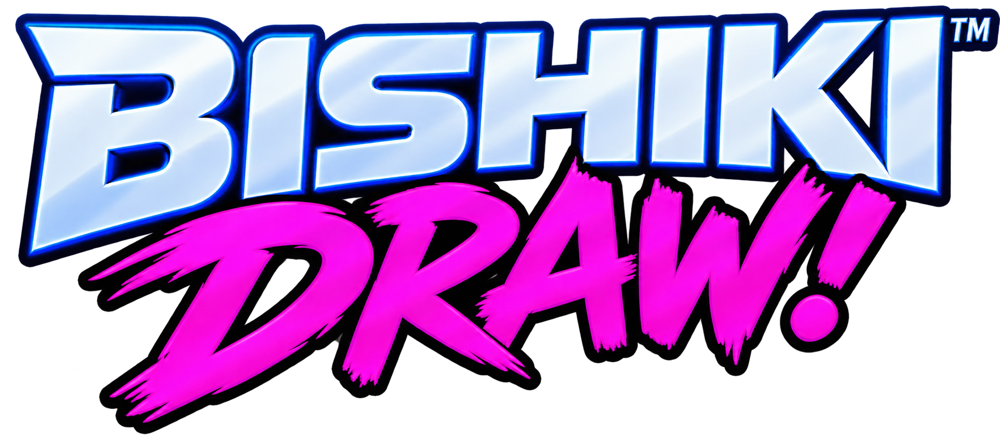
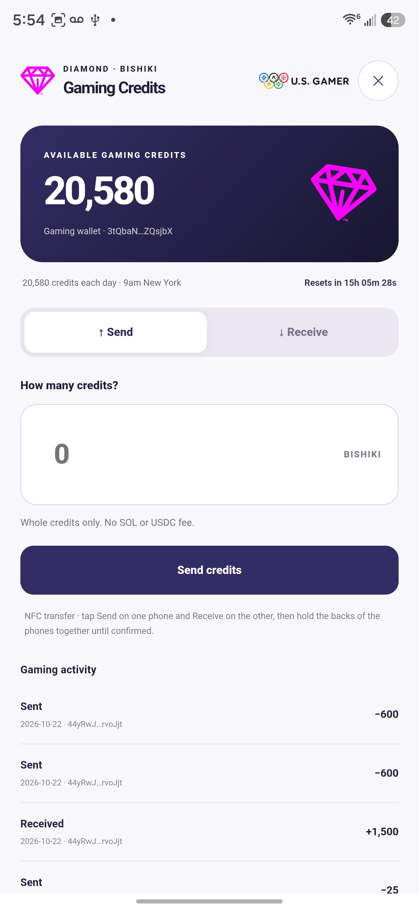
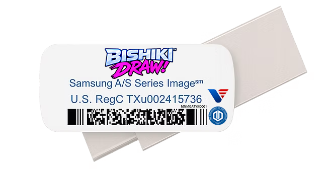

U.S. GAMER · ANDROID RELEASE
Your tag.
Your community.
Bring your gaming identity to U.S. Gamer with VisaUSD.
Save your Network Tag, check in with your community, and carry your event history forward with Solana Memo records.
Download Android APKVisaUSD U.S. Gamer · Version 1.0.17 · Build 19
Android only · 30.0 MB · Distributed on GitHub
Restored an earlier SSS image? Open this APK and choose Update. Keep the existing VisaUSD app installed to preserve your wallet, PIN and settings.
BISHIKI™ DRAW™ / FOUR SEATS, ONE TABLE
One table.
Every hand private.

Play together on Android, with or without a TV.
Gather up to four players. In Mobile Play, each phone shows the shared table and its owner’s cards. Connect the Room Admin’s compatible Samsung DeX or Android desktop display to put the public game on TV, while every player keeps a private hand on their phone.
TV play requires a compatible external-display connection. Mobile Play works without a TV. Screens shown are captured from the Android app.
Download Bishiki™ DRAW™ 0.4.10 · build 15 · Android APK · 43.1 MB. For Competitive Play, also install VisaUSD 1.0.17 on the same device. Classic Mode remains wallet-free.
GAMING CREDITS / COMPETITIVE PLAY
Bring your Gaming Credits
to the table.
Competitive Mode requires the VisaUSD app installed on the same Android device as Bishiki DRAW.
Use the Gaming Credits-enabled VisaUSD 1.0.17 installer for Competitive Play. Keep an existing wallet installed and choose Update to preserve its data.
- 01
Connect your Gaming Credits wallet
Link the co-installed VisaUSD app to view your approved available Gaming Credits balance in Bishiki DRAW. Wallet approval stays inside VisaUSD.
- 02
Choose an equal entry
Every seat enters the same whole-credit amount. All In is capped by the lowest available balance at the table. Players review and approve their own entry.
- 03
Compete, or train with CPUs
Play with friends or named CPU opponents at Easy, Normal, Hard or Championship difficulty. Competitive results award the match’s Gaming Credits to the winner. Humans and CPUs receive a daily Gaming Credits allocation at 9 AM New York time.
Gaming Credits are non-redeemable, have no cash value and cannot convert to VisaUSD, cash, goods, services or prizes. Classic Mode is available without a wallet.
Open Bishiki™ DRAW™ Player Manual
Connect and approve on the same device.

COMING IN A FUTURE USB-C EDITION
Your table.
Ready to take with you.
A future Bishiki DRAW Dualscan OS USB-C model is planned for sale at USPS.com, USPS Retail Locations and other global retailers where Samsung, Google Pixel and Motorola prepaid devices are sold.
The current GitHub community download already includes both the refreshed Samsung Smart Switch restore image for compatible Samsung devices and individual Android APK installers, including Bishiki DRAW and VisaUSD. Extract the ZIP and copy only SmartSwitchBackup2 to the USB-C drive root. Players can use the installation method appropriate for their device.
Future availability and release details will be announced.
02 / WRITTEN TO SOLANA
Your event record.
Carried forward.
U.S. Gamer Event Records use the Solana Memo field to preserve the context of tagged transactions.
With your Network Tag saved, VisaUSD adds it to eligible Solana transfers. When both participants’ tags are available, the memo records the sender, recipient, amount and asset.
Once finalized on Solana, these transactions form immutable U.S. Gamer Event Records. Their original record cannot be edited, carrying the event history forward.
03 / THE OFFICIAL PUBLICATIONS
Know the rules.
Understand the platform.
The Official U.S. Gamer Rulebook and Institutional Technical Whitepaper, together in one 59-page publication.
VISAUSD · U.S. GAMER RELEASE
Ready for
your next event.
Get version 1.0.17 directly from our GitHub distribution. It includes caller-verified Gaming Credits approval, recoverable signed match receipts, and full From/To addresses in Gaming Credits activity. Update an existing installation to preserve its wallet, PIN and settings.

VisaUSD U.S. Gamer
Version 1.0.17 · Build 19 · Android only
29,960,111 bytes · 30.0 MB · Open the downloaded APK on your Android device to install. If prompted, allow installation from the source you used to download it.